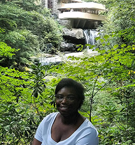

 Hello Everyone! My name is Rika. I am originally from Chicago but currently reside outside of Chicago in Oak Park. I have always been a fan of Frank Lloyd Wright's homes so it is great to be able to see so many right in my neighborhood. I've been on several tours of homes designed by Wright. My favorite would have to be Falling Water in Pennsylvania (make sure you check out the photo to the left).
Traveling is very important to me and something I hope to spent most of my time doing. If I could travel and work that would be ideal for me. Not having to settle in one place and move around would be a dream come true. I visited Ireland last Summer. Next domestic trip will be to Yosemite Memorial Day weekend and next planned international trip is between Switzerland and New Zealand.
I am working towards my degree in Computer Science. I have worked with vb.net, java, php, and c++. I used to handle a lot of css in the early 2000s but so much as changed since then. Not continuing to improve your skills and learn new things really has an affect on you. I feel like because of the amount of time that has gone by since I have touched css, I've forgotten so many things. I am very grateful that this bootcamp exist so that I can hone my skills and do so much. The love I wants had for the web is coming back now! I think this will also help push me to finish my degree.
When I am not on the computer or traveling, I am working on a Jigsaw puzzle (most calming thing ever for me) or looking for a new bike path when the weather is ready! I plan on opening my blog again (started in 2001) to document my improvements and goals in regards to web development and programming. I will also like to document my travels across the country to help other people find ways to save money and also display my travels as someone of color. I hope you enjoy my site!